在站立不动时进行主要攻击，能精准地射击目标，也能以连发模式为辅助，应付贴身近战。
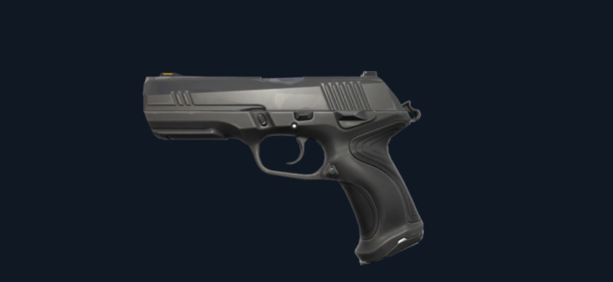一把灵活的短管霰弹枪虽在近距离足以致命，但攻击两次后就需要填弹。与远距离武器搭配的效果不错。
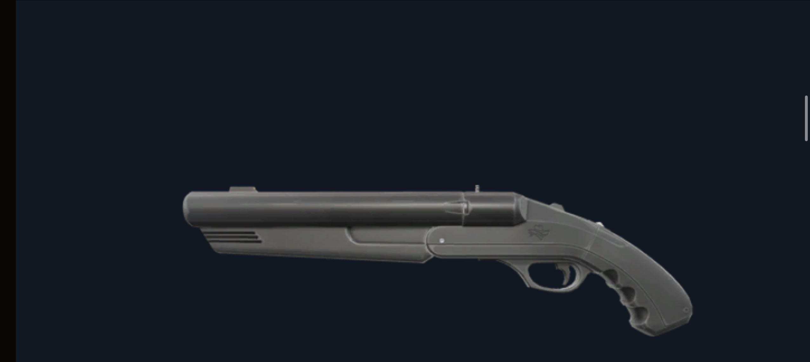高伤害的突击步枪，适合单发精准射击。
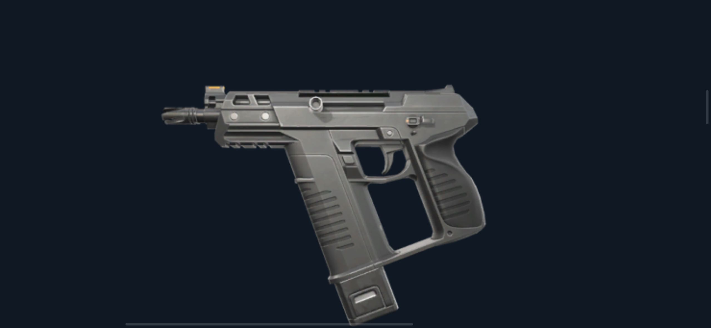鬼魅除了提供准度，更具备大型弹匣来弥补你可能一时失手的窘境。需要控制其射速才能对付距离较远的目标。要是距离近到能看到敌方的眼白，赶快点发就对了。
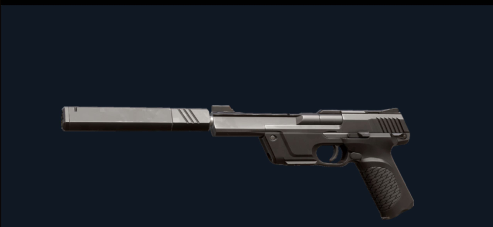发射极具威力的子弹会产生强大的后座力，真要有两把刷子才能完全掌握它。以正确的方式驾驭「正义」，你的敌人就会深刻体会成为炮灰的感受。
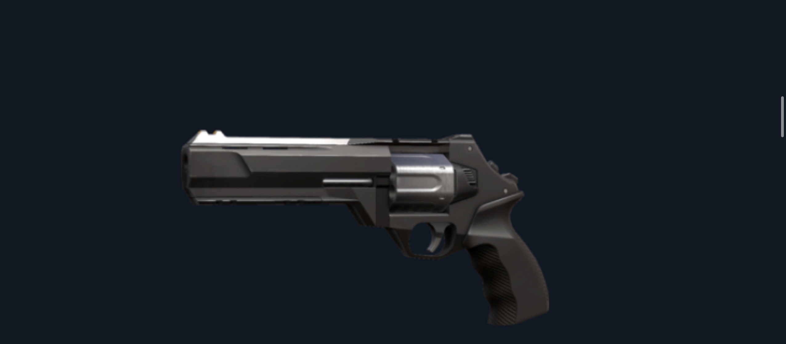这把冲锋枪与其同类型的枪枝相比，能在中距离和远距离发挥效果，但代价是牺牲其射速与机动性。虽然装有20发子弹的弹匣在扫射时一下就空了，但要是能好好开镜瞄准和控制射击，就能在中距离把敌人射成蜂窝。
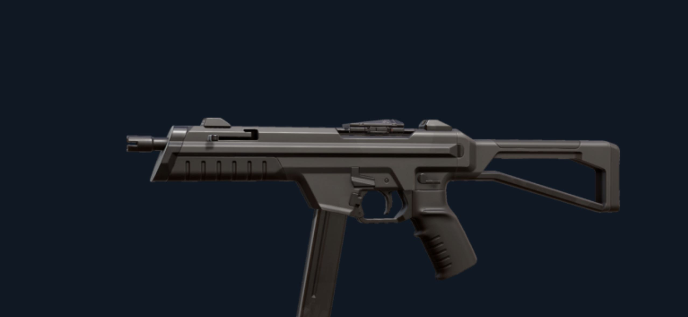一把伤害值、射速和准度皆平衡的全方位武器，能在近距离和中距离发挥实力。它能让出现在每张地图转角处的敌人留下阴影，需要稳定瞄准才能打倒远距离的敌人。
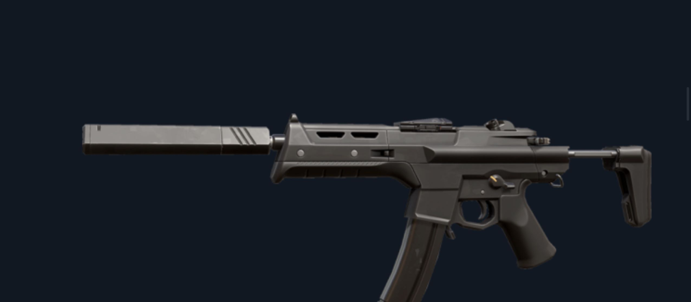重炮顾名思义很有重量，但却很稳定。它的主要攻击方式有利于镇守转角处，或用来冲锋陷阵。辅助攻击则可在中距离打击目标。
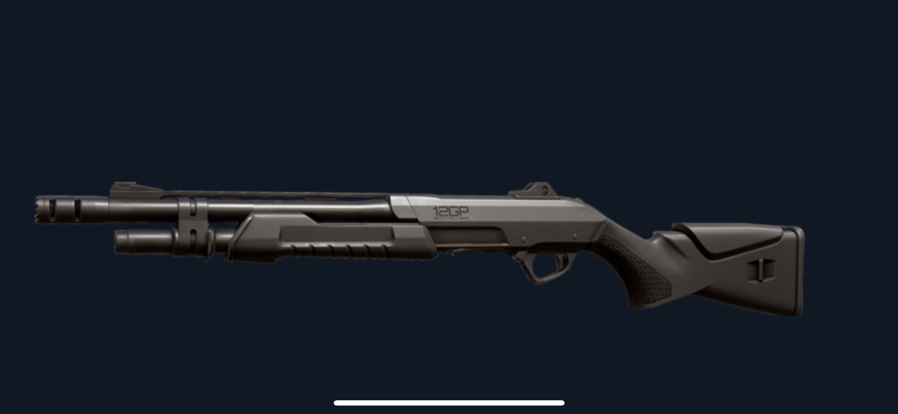射速快又能固定提供高伤害值的自动霰弹枪。主要攻击能在近距离重伤目标，而且你需要处变不惊，才能打爆距离一臂之遥的任何目标。
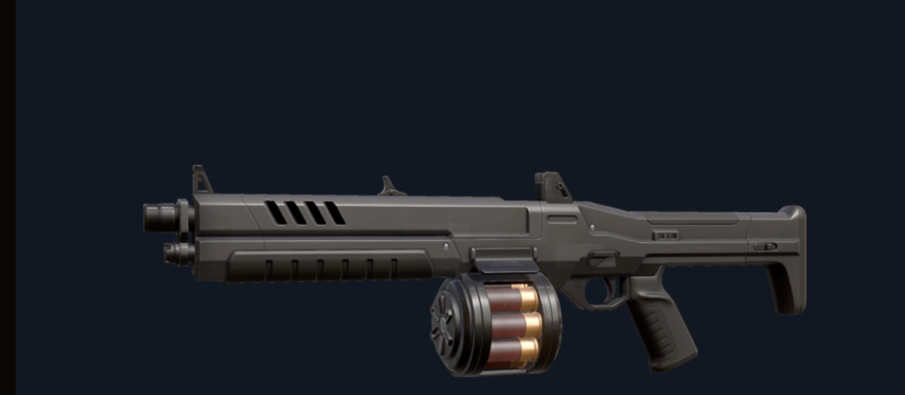当你瞄准目标时，它就是一头装有战术配件的野兽。辅助攻击能让你开镜瞄准，向位于中距离和远距离之间的目标进行精准且急促的连发射击。
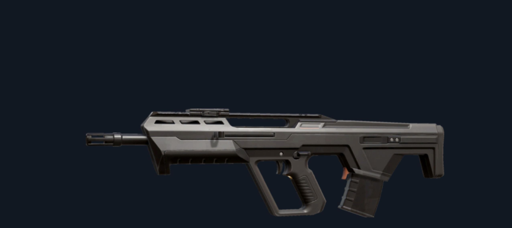为了神射手设计的步枪。虽然相较于其他步枪较重且机动性较低，但却相当精准且威力强大。当敌人出现于中距离和远距离时，就是「猎人头」的好时机。
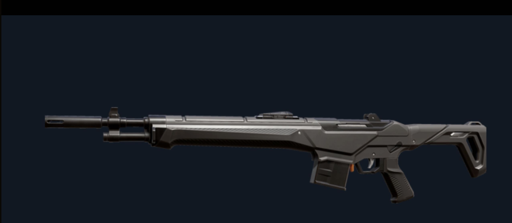对任何测试你实力的人客气，在近距离控制连发就能在任何一处扰乱敌人，静止不动进行攻击时最有效。
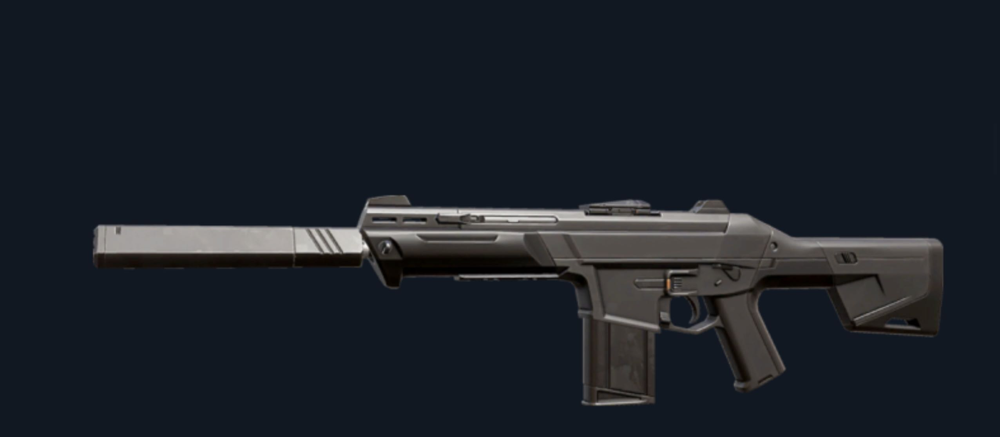随着攻击时间拉长，其稳定度也随之下降。不过「狂徒」仍能克服距离，提供高伤害值。对专注追求一枪爆头的玩家来说是一大福音。
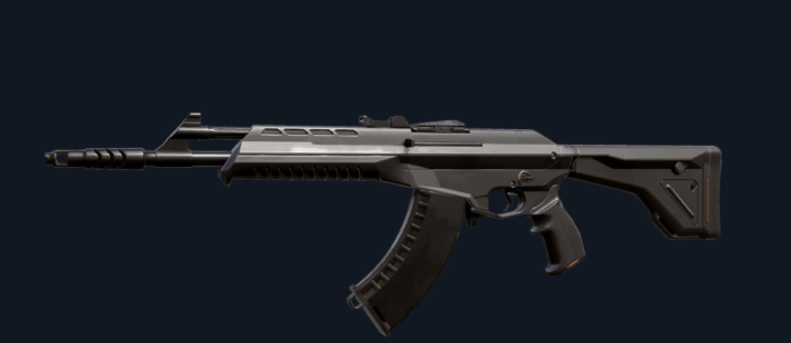一把灵活并可单倍放大瞄准的杆动式狙击枪，能够有效吓阻敌人继续前进。较慢的射速是要提醒你必须尽可能百发百中，否则就空门大开了。
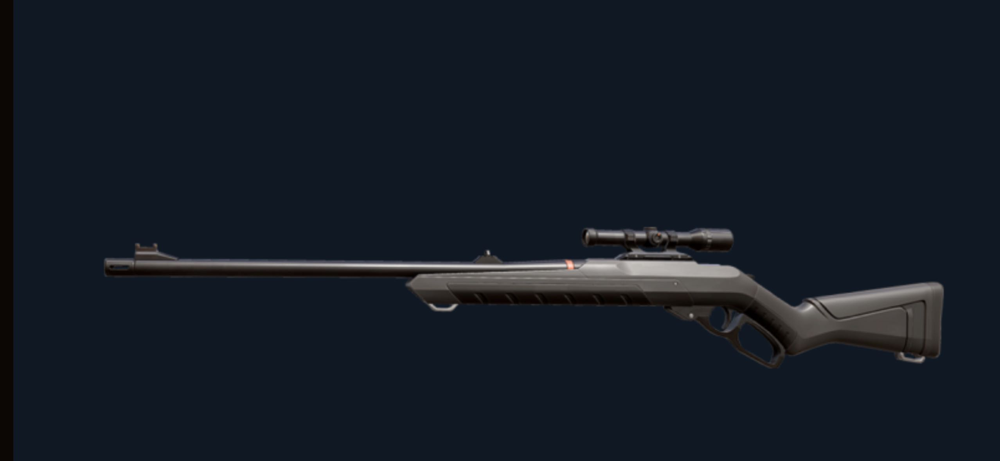一把凶狠并可双倍放大瞄准的单发上膛狙击枪。虽然机动性有限，但能发射威力强大的子弹进行攻击，只要一发就能让敌方溃不成军。
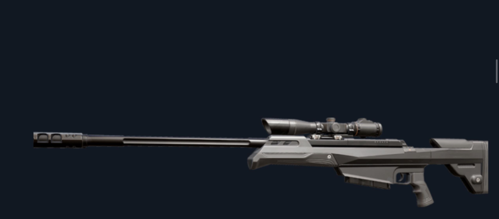枪管双倍，威力无限。总有人想展现不成功便成仁的超秀操作，这把枪就是专为他们打造。
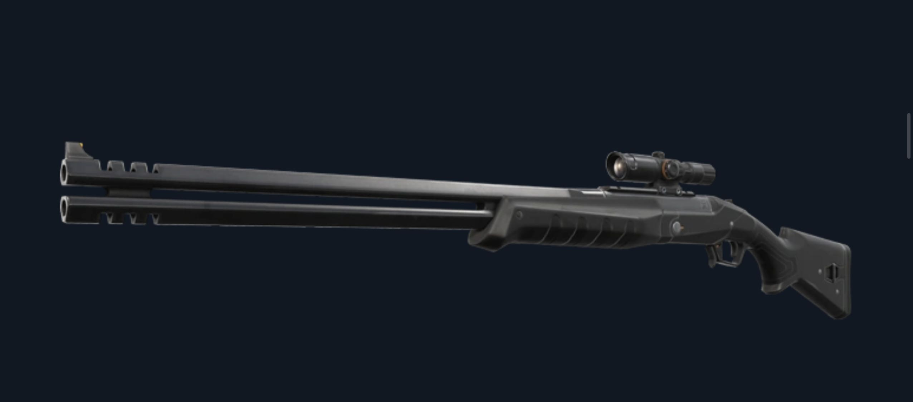战神具备的大型弹匣能有效提供压制火力或对敌方小组造成重伤。
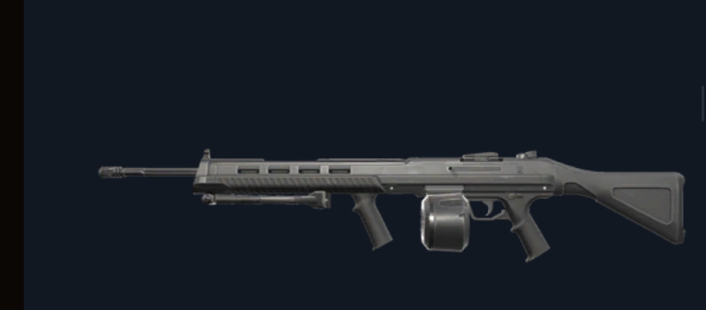拥有令人惊艳的稳定度，还能提供压制且具高伤害值的火力。可在近距离扫射敌方，或是以辅助攻击把自己变成一座活动枪塔。
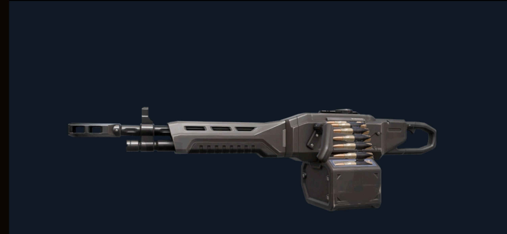